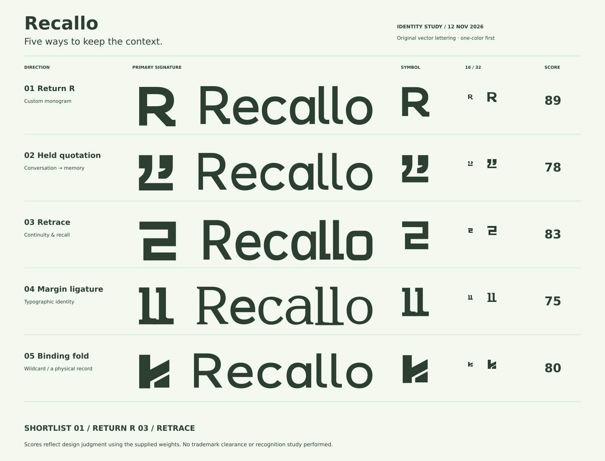
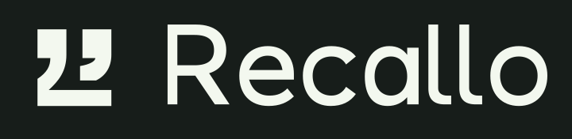
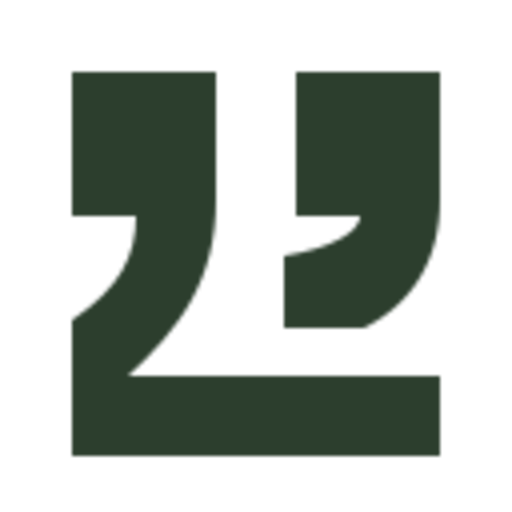
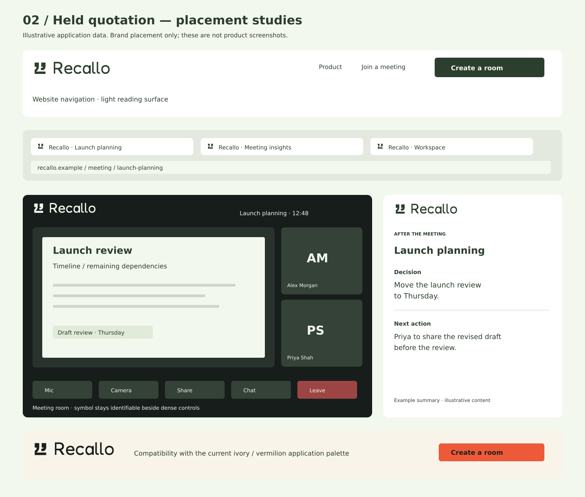
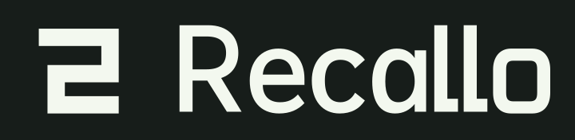

Have the conversation.
Keep the context.
Five different mechanisms for the same promise: something said now can remain useful later.
Judge the mark before the mockup. Compare the silhouette, read the name, then look at a real 16px render.
Research, sources & positioning ↗


01 / Return R first.
03 / Retrace as the alternative.
Return R — 89/100. The most direct connection to the name, with a broad counter and a returning leg that holds together in the app tile. The risk is the crowded R-monogram territory; its tiny cut loses some of the returning-foot character.
Retrace — 83/100. A compact one-piece silhouette with the clearest small-size channels. It is the stronger abstract route, but can read as a numeral 2 and feels more technical. It needs introduction beside the full name.
The numbers are weighted design judgments. Memorability has not been tested with users. None of the marks has undergone trademark clearance.
Return R
A returning foot gives the R a second destination.
89/100The construction
21-unit stem; 19-unit shoulder; open 31-unit counter. The leg returns to a horizontal terminal, rather than ending in a generic diagonal.
The lettering
Compact grotesk; open e, single-storey a, returning R foot.
The trade-off
The R category is crowded. The returning foot is less apparent at 16px; the master is deliberately simplified there.
Design judgment, not a measured recognition score.
Native-size inspection
16, 24, 32 and 64px are shown at their actual CSS size. The 512px drawing has its own scrollable field.
The 16px cut thickens the counter floor and widens its opening. The returning foot becomes a square hook; no rounded subpixel tip.


Open identity sheet and product placements


Held quotation
Two spoken fragments settle onto a single retained line.
78/100
The construction
Two offset quotation forms and a retained baseline. The second tail ends above the baseline, leaving an intentional open interval.
The lettering
Soft humanist lettering; wider apertures and a short-footed R.
The trade-off
Quotation marks are familiar editorial material. Recognition depends on the retained baseline, not on quotation marks alone.
Design judgment, not a measured recognition score.
Native-size inspection
16, 24, 32 and 64px are shown at their actual CSS size. The 512px drawing has its own scrollable field.

The 16px cut removes the second tail curve and opens the gap above the baseline to 2px. Both quote heads remain 4px wide.


Open identity sheet and product placements



Retrace
One path moves forward, turns back and continues.
83/100
The construction
A single filled contour with two opposing right-angle returns. A 20-unit channel separates the passes; no arrowhead, loop or implied playback button.
The lettering
Square-shouldered grotesk; clipped e aperture and firm horizontal rhythm.
The trade-off
Can be read as a numeral 2, an abstract S or a route. Its angularity is more technical than conversational and needs the warmer wordmark beside it.
Design judgment, not a measured recognition score.
Native-size inspection
16, 24, 32 and 64px are shown at their actual CSS size. The 512px drawing has its own scrollable field.
The 16px cut uses a 3px band and a minimum 1px channel, aligned to a 16px grid. At 32px it uses the fuller master proportions.


Open identity sheet and product placements


Margin ligature
Recallo’s double l becomes a shared editorial margin.
75/100The construction
Two ascenders share a stepped foot. Small head serifs distinguish the stems; the lower rail continues the wordmark’s reading baseline.
The lettering
Original low-contrast serif lettering, linked l feet and a crisp R leg.
The trade-off
The wordmark carries this route. In isolation the symbol may read as II or a small architectural monogram; weaker in a crowded app grid.
Design judgment, not a measured recognition score.
Native-size inspection
16, 24, 32 and 64px are shown at their actual CSS size. The 512px drawing has its own scrollable field.
Serifs widen to full pixels at 16px; the shared foot is 2–3px deep. Use the serif master from 32px upward, not a scaled full wordmark.


Open identity sheet and product placements


Binding fold
A loose strip folds into a bound, retained edge.
80/100The construction
A vertical spine supports a rising flap and a separated lower fold. The diagonal seam is structural and remains open in one color.
The lettering
Expanded lettering with an upright R and broad, quiet rounded counters.
The trade-off
A folded-strip reading needs introduction; some viewers may see a flag or K. Avoid adding more folds or trying to hide another letter.
Design judgment, not a measured recognition score.
Native-size inspection
16, 24, 32 and 64px are shown at their actual CSS size. The 512px drawing has its own scrollable field.
The 16px cut makes the fold seam at least 1px, widens the spine to 4px and squares the lower flap. No decorative crease line is used.


Open identity sheet and product placements


What is delivered.
Each candidate includes filled-path SVG artwork, light/dark and monochrome versions, separate optical favicons, a 512px application icon, five native PNG test sizes, an identity sheet and product placements. The wordmarks are original outlined lettering; they contain no live text or embedded raster artwork.
The placement studies use illustrative meeting data. The forest identity palette is the requested starting point. Each mockup includes a compatibility strip for the existing ivory/vermilion application.